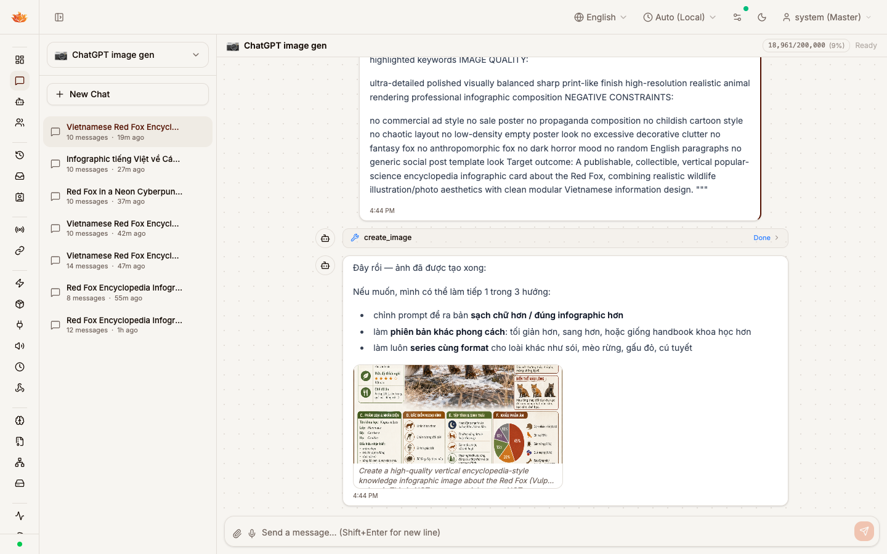
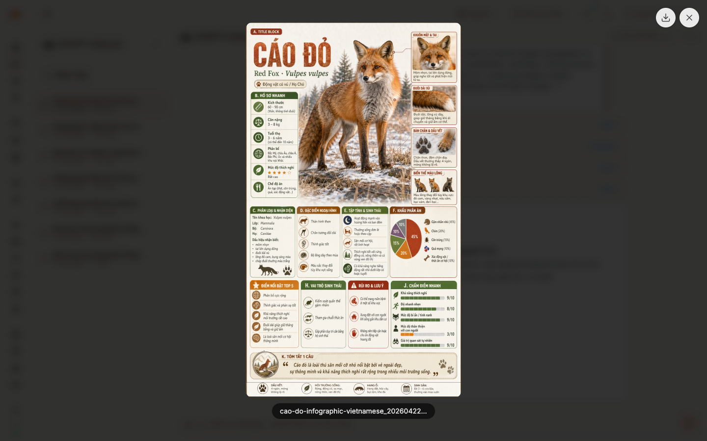
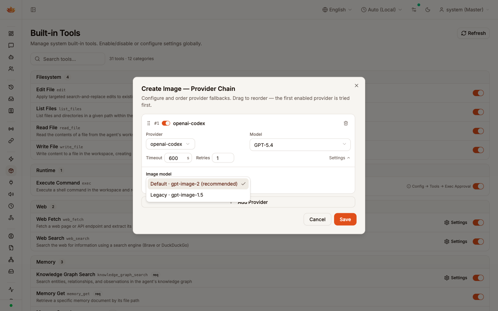

What this shows
Real end-to-end run of the unified create_image → NativeImageProvider → Codex pathway against a complex Vietnamese infographic prompt. Tool completes with Done, image renders inline with the prompt as caption, and the image model is user-configurable from the existing Chain dialog.
Why it matters
Before this PR, routing create_image to openai-codex failed with provider "openai-codex" does not expose API credentials required for image generation. The new NativeImageProvider interface bridges OAuth-backed providers without exposing static keys — and locks in gpt-image-2 as the quality default.
Review cue
The generated PNG is intentionally compact (thumbnail + expanded view) rather than a raw file attachment, so the PR itself stays small. The captures are here to show the surface, not to ship the asset.
1 · Inline result · create_image returns Done, image + prompt caption render
Tail of the Vietnamese Red Fox encyclopedia prompt, then the tool-result row, then the assistant reply with image and caption.
chatgpt-image-gen

create_image call that completes with Done. The assistant acknowledges in Vietnamese and the generated image renders inline via MediaGallery. Beneath the image, in muted italic, is the prompt caption — one of the two new UX surfaces this PR adds. The prompt is also embedded into the PNG's tEXt chunk on write, so downloaded files carry their own provenance.
Backend trace
Log sequence: tool call create_image args_len=N → (4–8 min of work upstream) → create_image: file saved path=/app/workspace/…/generated/…/cao-do-infographic-vietnamese_….png size=… → v3.run.completed.
2 · Expanded view · click the image, MediaGallery lightbox
Clicking the inline image opens the existingMediaGallery lightbox. Download button top-right. Full-resolution view confirms the generated asset is what reached the client — no placeholder, no degraded render.

MediaGallery render path with no new plumbing — that's the value of routing through the pre-existing create_image tool rather than inventing a new rail.
Download UX
Filename is cao-do-infographic-vietnamese_YYYYMMDD-HHmmss_hash.png — resolved by the tool's filename_hint arg + timestamp, not a random UUID. Discoverable in the assistant's workspace at {workspace}/media/{sha256}.{ext} (deduped on hash) and also under the tool's generated/YYYY-MM-DD/ folder.
3 · Where to configure the image model
Whitelist select in the existing "Create Image — Provider Chain" dialog. Defaultgpt-image-2, legacy gpt-image-1.5, nothing else.

| Label | Value | When to pick |
|---|---|---|
| Default · gpt-image-2 | gpt-image-2 | Quality baseline. The motivation of this PR. Recommended for everyone. |
| Legacy · gpt-image-1.5 | gpt-image-1.5 | Only if a pool account lacks gpt-image-2 entitlement or you're cost-tuning. |
| Anything else | — | Rejected by ValidateImageModel with unsupported image model "…"; allowed: gpt-image-2 (default), gpt-image-1.5 (legacy). Prevents silent upstream 400s. |
params.image_model in the create_image tool settings JSON. At runtime: create_image.callProvider reads entry.Params["image_model"] → NativeImageRequest.ImageModel → ValidateImageModel (defaults empty to gpt-image-2) → outbound tools[0].model on POST /codex/responses.
Why surface this at all
Most operators never need to touch it. It exists so that when Codex eventually rotates image models, or when an account's entitlement differs, the fallback is a clean UI toggle rather than a code change. The whitelist keeps the selector honest — no arbitrary strings, no silent upstream rejections.
Also visible in this screenshot
Timeout: 600s and Retries: 1 — the new defaults for this chain entry. Image generation of complex prompts legitimately runs 4–8 minutes; the old default of 120s × 2 retries routinely timed out mid-flight with context deadline exceeded. See §4.
4 · What changed — honest summary
Before/after, no hand-waving.| Area | Before | After |
|---|---|---|
Routing create_image → openai-codex |
Failed. credentialProvider required static APIKey / APIBase; OAuth providers don't satisfy it. |
Works. New NativeImageProvider.GenerateImage. CodexProvider implements it via POST /codex/responses with the native image_generation tool. |
| Responses API wire format | — | stream:true (API rejects false), instructions populated (API rejects missing), tool_choice forces image_generation. SSE stream parsed for response.output_item.done image items and response.completed output walk. |
| Image model selection | Hardcoded literal. | Whitelisted: gpt-image-2 (default) + gpt-image-1.5 (legacy). Selector in the Chain dialog. Server validator rejects anything else. |
| Default chain timeout | 120s × 2 retries · image gen routinely died with context deadline exceeded while upstream was still generating. |
600s × 1 retry · matches realistic gpt-image-2 completion time. Retries reduced to 1 — stateful upstream runs don't benefit from retry. |
| Assistant images in UI | Rendered inline, no provenance. | Prompt caption beneath image (muted italic, line-clamp-2, full text in tooltip). Prompt also embedded in PNG tEXt chunk so downloaded files carry provenance. |
| Per-request user toggle | Added in earlier commits of this PR branch. | Removed. Users toggling it off then forgetting = support footgun. Emergency admin kill-switch still exists via AgentConfig.AllowImageGeneration (stored in other_config). |
| CI drift (unrelated — fixed in-PR) | sessions.compact unclassified → RBAC drift test fail. contains() declared twice in tests/integration → compile fail. |
Classified, deduped. Green. |
Out of scope / follow-ups
Honest gap log.- Desktop (Wails) surface — UI changes live only in
ui/web/. Desktop shell unchanged. - Video / audio generation chains — only
create_imageis routed throughNativeImageProvider;create_video/create_audiostill use thecredentialProviderpath. - OpenAI-compat track (non-Codex providers sending
message.images[]) is wired but untested against a live OpenAI-compat image endpoint — forward-compat infrastructure only.